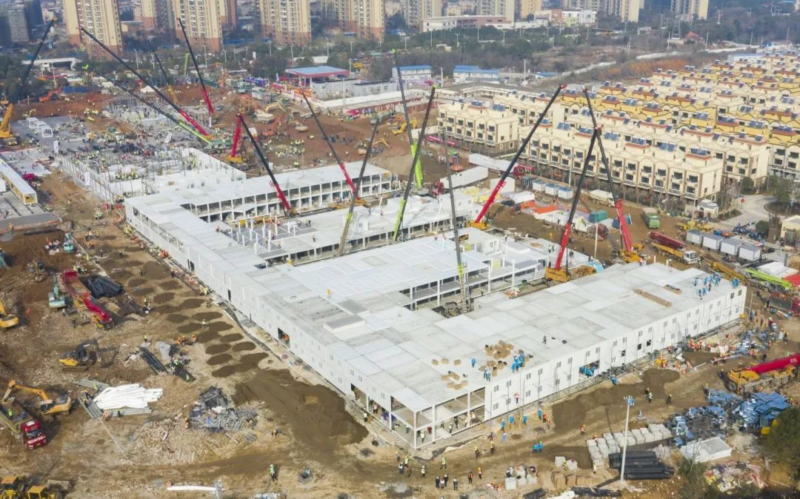
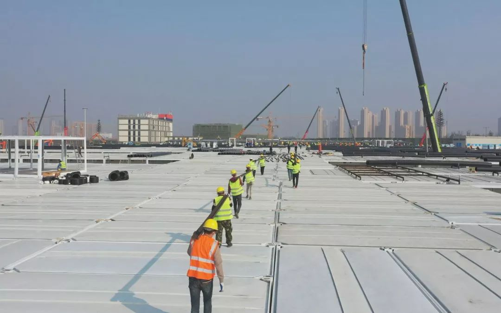

小汤山医院设计师：没想到图纸再用，希望武汉新医院效果更好
原文链接 备份链接 ********** *****黄锡璆表示，现在的技术条件比建设小汤山医院时好多了，他希望火神山医院的建设能够实现更好的使用效果。***** 火神山医院施工现场。受访者供图 文 | 新京报记者 韩沁珂 编辑｜王婧祎 校 …

“‘小汤山模式’医院，其实就是典型的野战医院，特点是简易、适用，因此建设难度不在于施工，而在于‘时间实在太紧张了’。”
全文4622字，阅读约需9分钟
2月5日，第二所武汉版“小汤山医院”——雷神山医院建设进入冲刺阶段。此前，武汉“火神山医院”已于2月2日完工交付，并于2月4日上午收治第一批45位患者。
在疫情严重的湖北黄冈、孝感、襄阳，以及西安、长沙、郑州、深圳等大型城市，用于集中收治新型肺炎患者的“小汤山模式”医院正加速落地。北京也宣布启动小汤山医院修缮，视疫情变化启用。
2003年“非典”时期，为有效控制疫情，北京在7天内建成小汤山定点医院，两个月收治全国七分之一的“非典”患者，医务人员未发生一例院内感染。
各地版“小汤山医院”是如何建起来的？北京小汤山提供了哪些经验？临时传染病医院的建设是否有章可循？“中国速度”背后，“小汤山模式”的落地也是一场与疫情的赛跑。
▲1月30日，武汉火神山医院，病房板房成型。摄影/新京报记者 许星星
 ▲2月2日，建设中的武汉火神山医院。摄影/新京报记者 许星星
▲2月2日，建设中的武汉火神山医院。摄影/新京报记者 许星星
━━━━━
三种落地模式
1月23日，新冠肺炎疫情在武汉迅速蔓延。武汉三镇各大医院发热门诊、住院部人满为患，并出现了医务人员感染。为遏制疫情，武汉决定参照“非典”期间的北京小汤山医院，在蔡甸知音湖建设一所可容纳1000张床位的医院，集中收治感染新型冠状病毒的患者。这就是2月3日交付的火神山医院。
但这还不够。1月25日，武汉决定在江夏区黄家湖开建第二所“小汤山”医院——雷神山医院。经过设计，该院最终建筑面积扩至约6万平方米，床位增至1600张，计划在2月5日交付使用。
武汉之外，鄂州、西安、深圳等地也开始筹备新建应急医院。
据鄂州市政府官网消息，鄂州市疫病防控应急医院工程项目正式命名为“雷山医院”。该院分两期建设，共设计386间病房，772个床位。位于西安市高陵区东南部的西安版“小汤山医院”于2月3日正式全面开工，工期8天，计划于2月10日建设完成，首期投用后可容纳500余患者同时住院救治。
在更多地区，“小汤山模式”通过改造原有医院院区实现，如湖北地区疫情严重的黄冈、孝感、襄阳，以及湖南长沙、岳阳等地。
在孝感市东南医院院区总指挥邹三明看来，紧急时刻，利用原有医院改造成为“小汤山”医院，更应急，更高效。
1月底，孝感市及下辖的应城市、云梦县、大悟县，通过征用已有医院设立了4家“小汤山”模式医院，拥有床位990个。被征用改造的应城市中医院相关负责人介绍，改造的难点主要是前期腾空病房，要为患者妥善办理出院手续或转院手续。“总体来说，患者还是理解和支持的，接下来的消毒、改建工作就很顺利。”
黄冈是湖北境内除武汉之外疫情最为严重的城市。在就诊排长队、留观床位紧张的情况下，该地征用大别山区域医疗中心作为发热患者集中收治点，改造成黄冈版“小汤山医院”。大别山区域医疗中心是黄冈市中心医院新院区，主体工程、室内外装饰装修已完成，原计划今年5月整体搬迁。这为改造提供了有利的前提条件。
三天时间内，医院通水、通电、进出步道、“三区两通道”建设完成，清扫整饬15000余平方米院房，安装病床700余张，1月28日晚正式启用。
为保证建设速度和质量，郑州等地在建设“小汤山模式”医院过程中，将快速改造原有医院院区与新建病房相结合。
1月27日，郑州决定将郑州市第一人民医院港区医院原址，改造扩建为新型冠状病毒感染的肺炎患者定点救治医院。
据介绍，医院建设包括对郑州市第一人民医院原港区医院门诊楼和病房楼的改造工程，以及在医院后侧扩建两座病房楼。新建病房楼面积为14000余平方米，采用活动板房形式，可提供280多个床位，预计2月6日交付使用。
 ▲2月3日，武汉火神山医院内部，一些病房安装了电视机。摄影/新京报记者 马骏
▲2月3日，武汉火神山医院内部，一些病房安装了电视机。摄影/新京报记者 马骏
━━━━━
“抢”出来的建设速度
北京小汤山医院建设者、北京住总第六开发建设有限公司原总经理程立平表示，“小汤山模式”医院，其实就是典型的野战医院，特点是简易、适用，因此建设难度不在于施工，而在于“时间实在太紧张了”。
1月25日开工，2月2日建成交付。武汉火神山医院，是7500名建设者“抢建”出来的。
受疫情和春节影响，劳务工人调度难度极大，生活物资、就餐安排、住宿安置等后勤管理压力也巨大；施工现场面临低温冻雨、道路不通、场地高差大等诸多不利因素。施工场地东西高差最大近10米，既有建筑物需要拆除，又有大量清淤工作和鱼塘回填任务；运力紧张、低温冻雨、道路不通……摆在建设者面前的难题，一道接一道。
在火神山，一切节点都是以小时、甚至分钟计算的。极限的工期要求下，设计、施工、监理人员齐守现场，整个建设过程可以总结为“边设计、边施工、边修改、边调整”。
5000万网友通过直播“在线监工”，见证了火神山的建设速度：
1月25日，在设计图纸尚不确定的情况下，建设者们不等不靠，提前进场施工。
1月26日，防渗层施工全面展开。
1月27日，首批箱式集装箱板房吊装搭建。
1月28日，1栋双层病房区钢结构初具规模。
1月29日，板房安装完成20%。
1月30日，集装箱板房进场、改装、吊装快速推进。
1月31日，基础混凝土浇筑全面完成。
2月1日，活动板房全部安装完成。
2月2日，医院建成交付。
对于在原有医院基础上改建的“小汤山医院”项目来说，工期更短，基本要求在2-3天内改造完成。
“27、28、29日就3天，必须完成1.41万平方米的改造修缮。”这是长沙决定改造修缮长沙市公共卫生救治中心（长沙第一医院北院），收治长沙及周边所有的确诊病人时，提出的时间要求。接受媒体采访时，负责施工的湖南高岭建设集团董事长胡锷说，当时他的心里很没底，“大年初二怕是难找到人。”
出乎他意料的是，1月27日一大早，58名工友争相赶来，“没有一个人讲条件，我们就是吃这碗饭的，我们不建医院，有病大家去哪治？”一位工友说。
当天下午，工人队伍又增加到近200人，还有工友不顾家人反对偷偷过来。到28日、29日，共有17支队伍400余人投入建设，远超出原计划用工数量。
长沙市第一医院副院长介绍，医院改建修缮过程中，一直在陆续收治确诊病人，很多时候病人在楼上住院，工友就在楼下施工。“尽管工人们采取了必要的防护措施，但一边收治确诊病人，一边争分夺秒施工，这样的压力可想而知。”
经过400人三天三夜连续奋战，长沙市公共卫生救治中心三栋旧楼，先后接通自来水、网络、燃气，2栋病房完成改造达到防控标准，300吨污水收集和处理罐安装到位；医疗服务用房第一栋搭建完成。
这座始建于2003年非典时期的特殊医院，17年后，成为了长沙抗击新型肺炎疫情的主战场。
 ▲2月4日，建设中的武汉雷神山医院。中建三局供图
▲2月4日，建设中的武汉雷神山医院。中建三局供图
 ▲1月29日，北京小汤山非典定点医院旧址正在施工改造。摄影/新京报记者 李凯祥
▲1月29日，北京小汤山非典定点医院旧址正在施工改造。摄影/新京报记者 李凯祥
━━━━━
来自北京的“隔离”经验
“小汤山模式”落地全国的同时，北京小汤山医院也启动修缮，将视疫情变化启用作为补充。
2003年“非典”时期，为有效控制疫情，北京在7天内建成小汤山定点医院，创下世界医院修建速度纪录。医院两个月收治全国七分之一的“非典”患者，医务人员未发生一例院内感染。
当时的北京小汤山医院基本为一层病房，共有22个病区，1000张床位。分东西两区，每区建有6排病房。病房南侧是X光室、CT室、手术室。病房北侧为重病监护室、接诊室、检验科。
曾参与北京小汤山医院设计的知名设计师黄锡璆，得知武汉将参考“小汤山模式”建设医院后，专门给设计团队打去电话。他提出，当年的小汤山医院设计曾留下遗憾和不足，比如病房紧挨地面，没有隔空层，容易潮湿；没有设置专用病区走道，开门就是院子，管理不便。
“我们在设计时充分听取了这些宝贵的意见和建议。”中信建筑设计研究总院有限公司副总建筑师、火神山医院设计总负责人汤群在接受媒体采访时说。
在北京小汤山医院的设计基础上，火神山医院共设两栋住院楼，呈中间医护两边病房的“鱼骨状”布局，站在走道里可步行至任何一间病房。
病房离地面架空30厘米，每间病房放置两张病床，均有独立卫生间。两扇窗户和通道组成的专用隔离防护窗，用于药品和食品的传递。而且医院绝大部分房间都是负压房间。“房间内的压力比外面低，如同给病房戴上‘口罩’，避免病毒随着气流产生交叉感染。”相关负责人介绍。
医院实行严格的分区隔离，不仅医疗区与生活区分开，还设置清洁区、半污染区、污染区及医护人员专用通道和病人专用通道，严格避免交叉感染。
为杜绝大气和水污染，医院铺设了5万平米的防渗膜，覆盖整个院区，同时搭设了雨水、污水处理系统，经过两次氯气消毒处理，达标后才可排入市政管网；每间病房均分别单独设置不可循环的新风系统和排风系统，它们共同构成负压系统，保持病房空气新鲜洁净，排出气体经消毒后才会排入空气中；在1号病房楼南侧设垃圾焚烧炉，固体废物集中焚毁，确保不造成环境污染。
“很多设计标准、设备配备，都要优于当年的小汤山‘非典’专科医院。”原北京小汤山“非典”医院院长张雁灵表示，火神山医院建成并投入使用，将对防控疫情产生重大意义。
▲2月4日，雷神山医院正在进行医技楼钢结构安装施工。中建三局供图
━━━━━
湖北改建临时传染病医院将有章可循
有了北京小汤山医院的经验，如今落地全国各地的应急传染病医院，都对不同区域的隔离划分提出了严格要求。
郑州版“小汤山医院”设计为病房住院区、接诊观察区、医技综合区，三大功能区相对独立，以门禁相互隔离。病患流线、医护流线、污物流线、后勤流线四线分离且清晰便捷，确保“洁污分流、医患分流”。
孝感新建的安陆市传染病医院，规划面积100亩，分为生活区域、物资供应区域和急救区域三部分，同时设有病人通道、医护人员通道、清洁物品通道和医疗废物通道。
功能区域划分为何如此严格？相关负责人表示，这既能有效抗击当下疫情，长远来看，也能提升全市医疗卫生水平。
但真正建设一所规范的传染病医院，并非易事。
时间紧、任务重、技术人员缺乏，建设或改造临时医院没有现成的设计规范，都是建设路上的“拦路虎”。为此，湖北省住建部门近日紧急组织编制《呼吸类临时传染病医院设计导则（试行）》。
《导则》提出，在临时传染病医院的总体规划和平面布局上，明确功能分区，做到各部门洁污分区与分流。合理设计诊疗流程，重视医疗区内病患者诊疗活动区域与医务工作人员工作区域的相对独立。减少洁净与污染人流、物流的相互交叉与相互感染几率。
同时要“临时兼顾长远”，统筹考虑短期使用和长期使用在建筑功能、安全等方面的规范要求，为发展预留一定的空间，布局与竖向以及结构应考虑改扩建的可能性。
记者注意到，《导则》还首次详细披露了武汉火神山医院和雷神山医院的设计方案和平面图，供湖北各地建设临时医院参考。并给出箱式房和活动板房两种自由度高、安装和拆卸方便的钢结构装配式建筑体系选型。
此前，鄂州版“小汤山医院”——雷山医院的建设，便参考火神山医院、雷神山医院的设计，结合当地实际需要，对包括呼叫系统、监控系统、消防系统等在内的场地进行了设计规划。
据中国建设报报道，为有效缓解病房不足患者较多的突出矛盾，湖北省各地计划启动120多所临时传染病医院或隔离病房建设、改造。
据悉，上述《导则》适用于新建临时性按甲类传染病预防和控制的医院建筑，能够有效指导湖北临时传染病医院的建设或改造工作。这意味着，今后，湖北各地临时传染病医院的建设和改造将有章可循。
新京报记者 吴娇颖 编辑 张畅 校对 李立军
点击下图进入”全国新型冠状病毒感染肺炎实时地图“

*值班编辑 李二号*


本文未经新京报书面授权不得转载使用
欢迎朋友圈分享

原文链接 备份链接 ********** *****黄锡璆表示，现在的技术条件比建设小汤山医院时好多了，他希望火神山医院的建设能够实现更好的使用效果。***** 火神山医院施工现场。受访者供图 文 | 新京报记者 韩沁珂 编辑｜王婧祎 校 …
原文链接 备份链接 编者按： 据央视新闻，武汉市政府将参照北京小汤山的模式建立急救医院，建筑面积达到2.5万平方米，可容纳1000张病床，医院将在6天内建成。 2003年，小汤山医疗点在对抗非典的战役中成效显著：一周建成，成为当时世界最大 …
原文链接 备份链接 数据来源：腾讯新冠肺炎疫情实时追踪 截止2月5日上午7时， 全国新型肺炎个案确诊23696例， 其中湖北患者16678人。 2月3日起，武汉火神山医院开始接诊患者。 武汉另一座“小汤山模式”医院—— 武汉雷神山医院也 …
原文链接 备份链接 因抗击疫情而诞生的武汉火神山医院，创下建设速度和科技装备的历史之最。2月4日上午，率先启用的部分病房正式接收了第一批病人。《财经》记者2月3日下午在现场看到，负责收尾的数千名工作人员仍保持高强度作业， …
原文链接 备份链接 拥有1000张床位的火神山医院今天开始接收病人，主要救治确诊患者。 1400位来自军队的医护人员已经抵达，院长张思兵大校是SARS防治专家。 拥有1600张床位的雷神山医院预计2月5日完工。 两家医院投入使用一 …